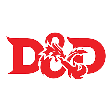

Personal information
My name is Lewie Zhu. As you can see from my chosen picture. I really like pikachu and it was drawn by a close friend of mine. I was born here in the Netherlands in a city called Nijmegen. Although im born in the netherlands my whole family came from China. So i was born in a asian household. This year started my first year at the Hz in Middelburg. Before starting this study i had zero experience in programming but im really eager to learn and hopefully improve as much as possible during my study here. Im not really talkative and quite introverted.
Things i like to do in my freetime
I am interested in alot of things but these are some of the things i like to do in my free time.
My hobbies are:
- Playing Dungeon and dragons
- Watching series/anime
- Playing games and sports
- Playing reading novels,comics and manga
I used to play quite often DnD with a group friends locally but after Corona it became a lot less frequent and they only recently started to pick it up again
Mainly play Genshin Impact at the moment and used to try alot of different sports. Although that has been quite a while and was also part of a Scouting Group before
I like to read all kinds of comics and novels,i have read chinese,english,korean and japanese novels and comics before